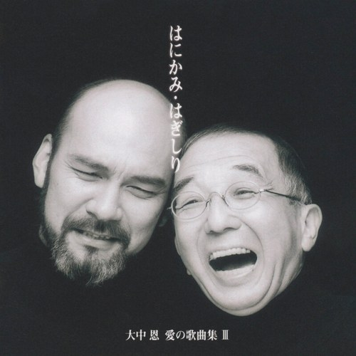
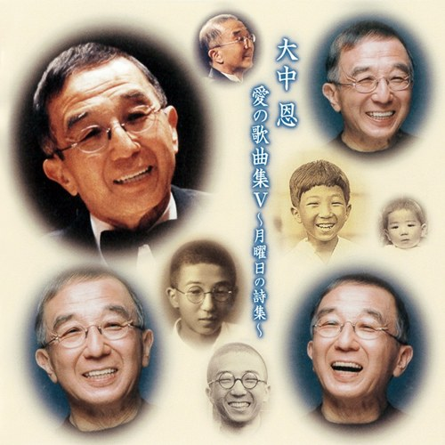

次の公演 2026年11月23日(月・祝) 13:30開演・大安寺 獅子吼殿ホール「ひ・び・き」
奈良の古寺で響きあう、
祈りのコンサート
奈良の古寺で響きあう 〜心のうた 躍動のリズム 愛のハーモニー〜
出演：田中純（バリトン）、Trio Yuu（岩井章 コントラバス／来田千佐登 フルート／吉田はるみ ピアノ）
ドイツ歌曲と日本のうた
ドイツ歌曲や日本のうた、ピアノの名曲ほか、とっておきのレパートリーをソロとアンサンブルで演奏します。
お客様との交流合唱
最後は会場の皆さんと一緒に歌う時間があります。
収益は被災地の支援に
世の中の安寧を願い、祈りをこめて。収益は被災地への支援に寄付されます。
これからの公演
プロフィール
大阪出身、奈良育ち。NHK奈良放送児童合唱団でボーイソプラノとしてテレビ・ラジオに出演。東京藝術大学音楽学部声楽科を卒業後、ドイツのデトモルト国立音楽大学・パダーボルン国立総合大学で研鑽を積み、ドイツ各地の教会でのソリスト、歌曲リサイタル、オペラで活動。第2回国際ブラームスコンクール（ハンブルク）で最高位を受賞。帰国後はドイツ歌曲・宗教曲のスペシャリストとして多くのコンサートに出演し、オーケストラとの共演も数多い。シューベルト「冬の旅」「美しき水車屋の娘」、シューマン「詩人の恋」、そしてヴォルフ歌曲の全曲演奏に取り組み、すでに200曲以上を発表。日本歌曲の初演やオペラ・ミュージカルにも出演し、尾上和彦のオペラ「仏陀」のタイトルロールは全国で数十回に及ぶ。京都女子大学名誉教授。
- 国際コンクール第2回国際ブラームスコンクール（独ハンブルク）で最高位
- 大学京都女子大学 名誉教授。東京藝術大学で学び、ドイツで研鑽
- ドイツ歌曲ヴォルフの歌曲を全曲演奏に取り組み、200曲以上を発表
- レコード2026年4月、ビクターから「大中恩 愛の歌曲集 III」を配信（全32曲）
- 審査員全日本学生音楽コンクール・日本クラシック音楽コンクールなどの審査員
- 舞台オペラ「仏陀」タイトルロール（東大寺公演 ほか数十回）
- はじまりNHK奈良放送児童合唱団のボーイソプラノ。奈良で歌い始めた人です
活動
歌手
ドイツ歌曲・オラトリオ・日本の歌、そしてピアノ弾き語り。サロンの近い距離で、話しながら歌うコンサートを続けています。
指揮者
あやめ池混声合唱団・あんさんぶる結歌・JMコールの指揮者。東京藝大在学中から、外務省・運輸省(当時)・三菱地所などの合唱団を指揮してきました。
指導・審査員
京都女子大学名誉教授。全日本学生音楽コンクール・日本クラシック音楽コンクール・滋賀県高校生音楽コンクールなどの審査員を歴任。
これまでのCD

大中恩 愛の歌曲集 III はにかみ・はぎしり（ピアノ：宮下俊也・全32曲。故畑中良輔氏が絶賛、雑誌『レコード芸術』でも高評価。2026年4月からビクターで配信） ビクターのページ →
大中恩 愛の歌曲集 V 月曜日の詩集（2009年4月22日発売・ビクターエンタテインメント） ビクターのページ →
くわしい経歴
NHK奈良放送児童合唱団でボーイソプラノとして活躍。東京藝術大学在学中より、外務省、運輸省(当時)、三菱地所他合唱団指揮者。デトモルト国立音楽大学(独)・パダーボルン国立総合大学(独)で研鑽。第二回国際ブラームスコンクール（独ハンブルク）で最高位受賞。J.S.G国際歌曲コンクール他入賞多数。ドイツ歌曲・オラトリオ・日本の歌・弾き語りスペシャリスト。尾上和彦/オペラ「仏陀」タイトルロール(東大寺公演(1995年)を含み数十回に及ぶ)。CD大中恩歌曲集「はにかみ・はぎしり」をリリース。滋賀県高校生音楽コンクール・第7回J.S.G国際歌曲コンクール・全日本学生音楽コンクール・日本クラシック音楽コンクールなどの審査員を歴任。あやめ池混声合唱団・あんさんぶる結歌・JMコール各指揮者。尾上和彦・大中恩・畑中良輔・中田喜直・猪本隆・湯山昭・團伊玖磨・新実徳英・木下牧子・信長貴富 各氏と共演。日本シューベルト協会・日本音楽表現学会各会員。京都女子大学名誉教授。
動画
これまでの公演・出演
ネット上の記録（研究者データベース・各会場・主催団体のページ）で確認できたものです。
2020年代（7件）
- 円熟の境地－珠玉のドイツリート－
アミティエ・ムジークサロン（京都市右京区）独唱（バリトン）／岡原慎也（ピアノ） 出典 - 珠玉のドイツ歌曲
アミティエ・ムジークサロン（京都市右京区）独唱（バリトン）／武知朋子（ピアノ） 出典 - 第160回（一社）日本シューベルト協会演奏会
兵庫県立芸術文化センター 神戸女学院小ホール出演（バリトン）／澤田美紀、田村香絵子、畑田弘美 ほか 出典 - ドイツの愛と日本の心～バリトンとピアノが奏でる初夏の響き～
アミティエ・ムジークサロン（京都市右京区）独唱（バリトン）／武知朋子（ピアノ） 出典 - 第156回 日本シューベルト協会演奏会～創立50周年記念演奏会
兵庫県立芸術文化センター 神戸女学院小ホール出演（声楽）／荒田祐子、藤村匡人、松田昌恵 ほか／ピアノ 久保千尋、山田剛史 出典 - 京都女子大学 教育学科音楽教育学専攻公開講座「ジャンルを超えた【うた】の世界」
京都女子大学 音楽棟演奏ホール講師・演奏（第一部 ドイツ歌曲 他／第二部 日本のうた）／花岡千春（国立音楽大学特任教授） 出典 - 京都女子大学ニューイヤーコンサート2020「歌声で紡ぐ心の物語－魔弾の射手からオペラ座の怪人へ－」
滋賀県立芸術劇場 びわ湖ホール 大ホール（大津市）独唱（バリトン）／ガハプカ奈美（ソプラノ）、阪部慎太郎（指揮）、ウインドカンパニー管弦楽団 出典
2010年代（2件）
- 京都女子大学ニューイヤーコンサート2017「Made in JAPAN ～日本の心 和の響き」
京都コンサートホール 大ホール独唱（バリトン）／大谷正和・土居知子（ピアノ）、ガハプカ奈美（ソプラノ） 出典 - 学宝 純正調オルガン 修復記念シンポジウム及び公開演奏会
京都女子大学 錦華殿1階 建学記念室出演（声楽アンサンブル“純”・バス）／伊藤繁（オルガン）、ガハプカ奈美、福永圭子、畑儀文 出典
2000年代（6件）
- 全日本学生音楽コンクール大阪大会 審査員（2007〜2021年）審査 出典
- 第125回 日本シューベルト協会演奏会 第21回シューベルティアーデ
兵庫県立芸術文化センター 小ホールプロデュース／禅定佳隆・船橋美穂（ピアノ）ほか 出典 - 第7回 J.S.G国際歌曲コンクール 審査員審査 出典
- 滋賀県高校生音楽コンクール 審査員（2002〜2004年）審査 出典
- J.S.バッハ「マタイ受難曲」
ザ・シンフォニーホール、ウィーン楽友協会大ホール出演 出典 - 田中純 バリトンリサイタル～ヴォルフ歌曲シリーズ(6)～独唱 出典
1990年代（61件）
- 奈良県合唱連盟創設35周年 記念演奏会 フォーレ「レクイエム」
大和高田市文化会館 さざんかホール出演 出典 - 京都バッハ合唱団 ゲシュプレヘスコンツェルト［第17回］ バッハ カンタータ21番・80番
京都府民ホール アルティ出演 出典 - 大中恩＋田中純
京都市北文化会館出演 出典 - マイ・ディア・アマデウス・シリーズ オペラ「フィガロの結婚」
いずみホール出演 出典 - フローラコンサート
秋篠音楽堂出演 出典 - 1・17 メモリアルコンサート「レ・ミゼラブル」
神戸新聞松方ホール出演 出典 - 第26回 あるぼーるコンサート「ドイツの風と日本のこころ」独唱 出典
- 山の辺芸術祭参加 ベートーヴェン「第9」演奏会
天理市民会館ホール出演 出典 - ヘンデル「メサイヤ」公演
大阪女学院チャペル出演 出典 - 日本歌曲伴奏リサイタル 土肥みゆき「詩人によせて」
京都府立府民ホール アルティ出演 出典 - 林達次オラトリオシリーズ ハイドン「天地創造」
ザ・シンフォニーホール出演 出典 - 20世紀の音楽シリーズ〈2〉 ツェムリンスキー「フィレンツェの悲劇」
フェスティバルホール出演 出典 - 第6回 真弓ハーモニックコンサート
四季の森公園野外ステージ出演 出典 - 大中恩の世界
あじさいホール出演 出典 - EBISUからの恋文「遙かな思い…Ich liebe Dich」
音楽の友ホール新大阪出演 出典 - 100号発刊 なら大好き記念コンサート
秋篠音楽堂出演 出典 - 第85回 シューベルト協会演奏会《C.レーヴェの夕べ》プロデュース
いずみホールプロデュース 出典 - 京都インターユニバーシティオーケストラ＆コーラス チャリティーコンサート「慰めと励ましの響き」
京都コンサートホール 大ホール出演 出典 - 田中純 バリトンリサイタル「ヴォルフ歌曲の夕べ」独唱 出典
- 田中純 6月のコンサート V独唱 出典
- ベートーヴェン「第9」演奏会（天理ライオンズクラブ）
天理市民会館ホール出演 出典 - 奈良労音「第9」演奏会
奈良県文化会館 国際ホール出演 出典 - 声藝舎 東大寺公演 オペラ「ヤカモチ」
東大寺南大門出演 出典 - クライネ・クノスペン合唱団 創立10周年記念演奏会 J.S.バッハ「マタイ受難曲」
いずみホール出演 出典 - 95 わかやま平和コンサート －ヒロシマの祈り－
和歌山市民会館 大ホール出演 出典 - いのちの電話チャリティーコンサート
奈良県文化会館 国際ホール出演 出典 - 戦後50周年 万国戦没者慰霊法要「鳥の歌」
東大寺大仏殿出演 出典 - 湯山昭の宇宙（あじさい音楽祭）
加茂町文化センター あじさいホール出演 出典 - コードリベットコールが歌うやすらぎの調べ シューベルト ミサ曲第6番 変ホ長調
尼崎アルカイックホール出演 出典 - 阪神大震災復興支援 オペラ ブッダ公演「散華」Buddha
東大寺 大仏殿出演 出典 - 奈良県合唱連盟祝典演奏会 グノー「聖セシリア荘厳ミサ」
奈良県文化会館 国際ホール出演 出典 - 奈良県音楽芸術協会特別演奏会 ヴェルディ「椿姫」より
奈良県文化会館 国際ホール出演 出典 - 茨木コールハーモニー 第3回定期演奏会（シューベルト ミサ曲ト長調 D.167）出演 出典
- 田中純 バリトンリサイタル～ヴォルフ歌曲シリーズ(5)～
青山音楽記念館 バロックザール独唱 出典 - Jun in June 田中純 6月のコンサート
秋篠音楽堂独唱 出典 - 田中純 バリトンリサイタル～ヴォルフ歌曲シリーズ(4)～
音楽の友ホール・新大阪独唱 出典 - 奈良労音「第9」演奏会
橿原文化会館 大ホール出演 出典 - 関西二期会「ドイツ歌曲の流れ Vol.6」プロデュース及び出演
いずみホールプロデュース・出演 出典 - 日本シューベルト協会例会「シューマンの夕べ」
いずみホール出演 出典 - アニュアルコンサート「8月の祈り'94」オラトリオ（鳥の歌）
ザ・シンフォニーホール出演 出典 - 奈良フロイデ合唱団 第12回定期演奏会 W.A.モーツァルト「ミサ・ブレヴィス K.220」
橿原文化会館 大ホール出演 出典 - ベルアルテノーヴァ演奏会
京都市国際交流会館出演 出典 - オペラ モーツァルト「フィガロの結婚」
相愛大学 アルカイックホール出演 出典 - オペラ「散華」（浄土宗大阪教区）
大阪フェスティバルホール出演 出典 - バッハ「ヨハネ受難曲」 千里バッハ合唱団、ヴァイマール音楽大学室内合唱団
いずみホール出演 出典 - 田中純 バリトンリサイタル～ヴォルフ歌曲シリーズ(3)～
音楽の友ホール・新大阪独唱 出典 - 田中純 バリトンリサイタル～ヴォルフ歌曲シリーズ(2)～
イシハラホール独唱 出典 - 田中純 バリトンリサイタル～ヴォルフ歌曲シリーズ(1)～
イシハラホール独唱 出典 - オペラ「散華」
東大寺大仏殿出演 出典 - 土肥みゆき 日本歌曲伴奏シリーズIX
京都会館 第2ホール出演 出典 - コードリベットコール演奏会 バッハ「マタイ受難曲」
ザ・シンフォニーホール出演 出典 - 河野佐奈江 伴奏リサイタル
大阪倶楽部出演 出典 - レ・ミゼラブル コンサート
新神戸オリエンタル劇場出演 出典 - 田中純 バリトンの夕べ
東京 日暮里サニーホール独唱 出典 - NHK FM 土曜リサイタル 出演（J.ブラームス、R.シュトラウス 歌曲）出演 出典
- 田中純「水車屋の娘」全曲リサイタル
東京 音楽の友ホール 他独唱 出典 - うたとギターでつづる名曲の夕べ
奈良県新公会堂独唱 出典 - 日本ブラームス協会 第100回記念例会出演 出典
- 関西フィル特別演奏会 ヘンデル「メサイヤ」出演 出典
- 田中純 バリトンの夕べ
東京 北とぴあ つつじホール独唱 出典 - モーツァルト「レクイエム」演奏会（2回）出演 出典
1980年代（16件）
- オペラ「永遠の今」初演出演 出典
- 京都女子大学 音楽教育学公開講座「歌曲に表現されたブラームスの人間性について」講師 出典
- 第59回 日本シューベルト協会演奏会出演 出典
- 芸術法要 オペラ「シッダルタ」出演 出典
- ゲーテ誕生日の夕べ（第240回誕生日記念）
毎日文化ホール独唱 出典 - 文化庁優秀舞台芸術奨励公演（久米の仙人）出演 出典
- 関西二期会 第29回オペラ公演（カルメン）出演 出典
- 田中純「冬の旅」リサイタル
東京文化会館（他）独唱 出典 - 関西二期会 第28回オペラ公演（ラ・ボエーム）出演 出典
- 日本ブラームス協会 第86回例会出演 出典
- 八幡市民オーケストラ 第13回定期演奏会 マーラー「子供の不思議な角笛」より
八幡市民会館 大ホール出演 出典 - 田中純 ロイヤルサロンコンサート
奈良 ロイヤルホテル独唱 出典 - 田中純・小林光裕 デュオリサイタル（帰国及び国際ブラームスコンクール入賞記念）
東京 音楽の友ホール独唱／小林光裕 出典 - 田中純 リーダーアーベント
西ドイツ ラーゲ市独唱 出典 - 第2回 国際ブラームスコンクール 第2位（1位なし）＝最高位
ハンブルク受賞 出典 - 田中純 第1回リサイタル（奈良）
奈良県文化会館独唱 出典